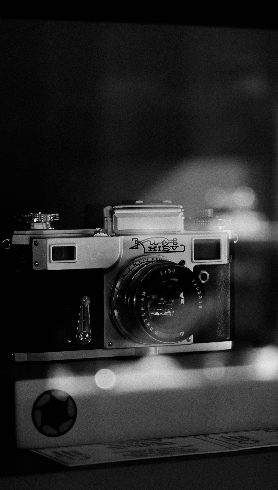
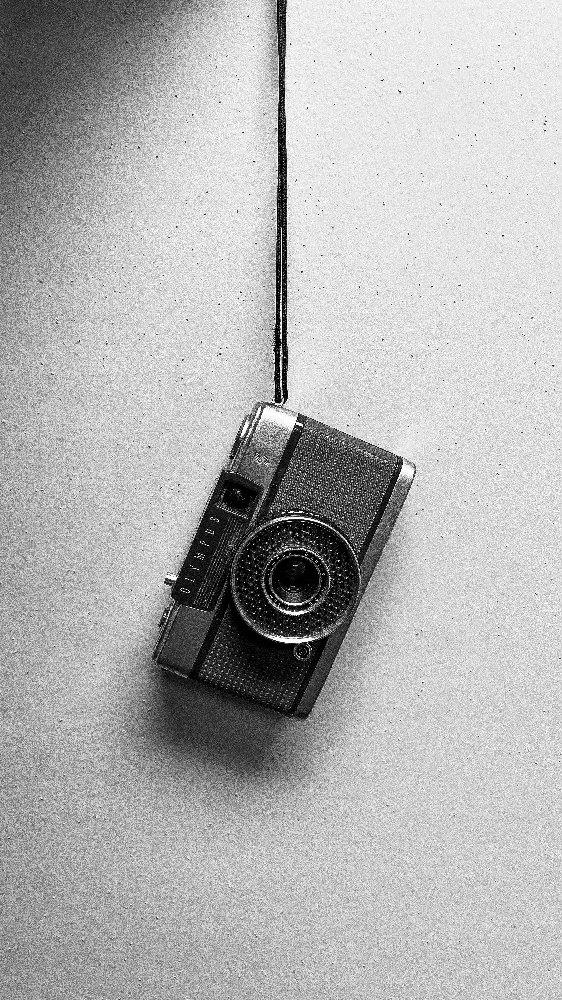
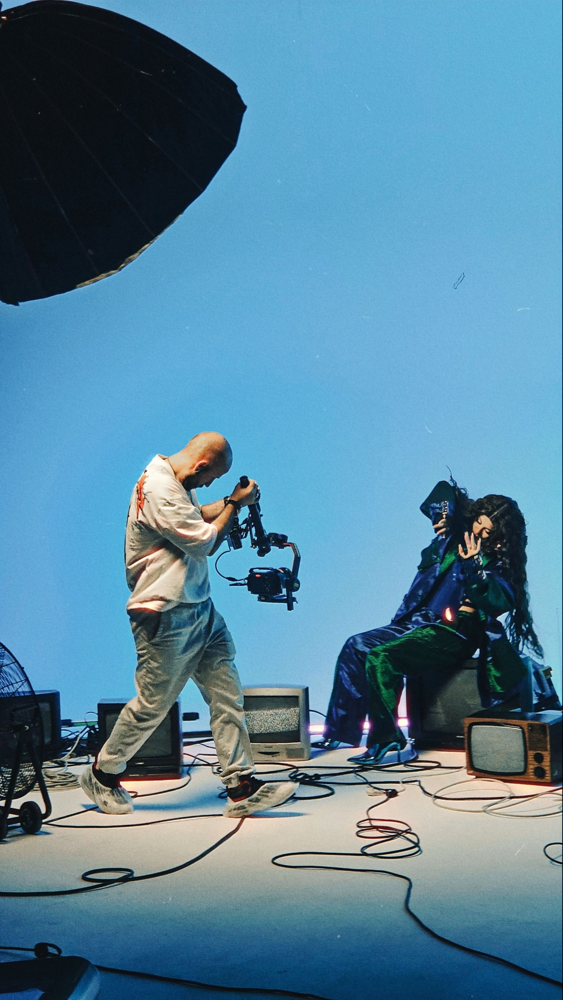

Quattro percorsi


diversi, un'unica idea di


 cura per i brand
cura per i brand

che vogliono crescere.
Kare Studio — il manifesto

Kare Studio nasce da un'intuizione semplice: i brand non hanno bisogno di un'agenzia enorme, ma di persone giuste.
Siamo quattro professionisti indipendenti — un social media manager, un direttore creativo, una fotografa e un videomaker — che hanno scelto di unire le forze sotto un unico nome. Non lavoriamo sempre insieme: ogni ramo è autonomo, con un volto e una responsabilità diretta verso il risultato.
Quando però il progetto lo richiede, i rami si intrecciano: la strategia social guida lo shooting, la direzione creativa dà coerenza al video, e tu hai un solo interlocutore invece di quattro fornitori da coordinare. È questo il senso di Kare: la cura, prima di tutto.
Federico Benedetti


Federico Benedetti
Social Media Manager / Content StrategistFederico aiuta i brand a farsi trovare e ricordare online. Dopo anni passati a costruire community e piani editoriali per realtà di settori diversi, ha sviluppato un metodo che unisce rigore strategico e sensibilità per i contenuti.
Scopri il suo ramo →Donato Scaglione


Donato Scaglione
Creative DirectorDonato osserva i brand come sistemi: ogni dettaglio, dal logo al tono di voce, deve contribuire alla stessa storia. Ha diretto progetti di identità e campagne per realtà piccole e grandi, sempre con lo stesso principio — la coerenza è ciò che rende un brand memorabile.
Scopri il suo ramo →Francesca Zama


Francesca Zama
PhotographerFrancesca fotografa brand da quando ha capito che ogni oggetto, piatto o spazio ha un carattere — e che il suo lavoro è farlo emergere. Il suo sguardo editoriale arriva da anni di progetti tra food, moda e hospitality.
Scopri il suo ramo →Eliot

Eliot
VideomakerEliot pensa per immagini in movimento: prima ancora di accendere la camera ha già montato il video nella sua testa. Ha girato brand film, documentari e contenuti social, sempre con la stessa ossessione per ritmo e dettaglio.
Scopri il suo ramo →
Perché Kare Studio?
Ogni progetto che seguiamo aiuta un brand a evolvere verso una versione migliore di sé — garantito dal fatto che non lavoriamo mai a compartimenti stagni.
Siamo quattro professionisti indipendenti che hanno scelto di unire le forze: non un'agenzia tradizionale, ma uno studio dove ogni ramo ha un volto, un nome e una responsabilità diretta verso il risultato. Scegli un servizio o componili insieme: in ogni caso parli sempre con chi farà davvero il lavoro.